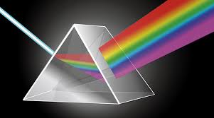

La óptica estudia la luz y sus fenómenos.

Reflexión: rebote de la luz (ejemplo: un espejo).
Refracción: cambio de dirección al pasar de un medio a otro (ej: un lápiz se ve “doblado” en el agua).
Lentes y espejos: permiten formar imágenes (ej: gafas, microscopios, cámaras).
Ejemplo: el arcoíris es la descomposición de la luz blanca en distintos colores al refractarse y reflejarse en gotas de agua.